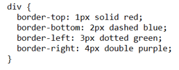

Có, phần tử HTML có thể được ẩn đi trên trang web bằng cách sử dụng lệnh CSS display: none;.

Ý nghĩa:
- test.test_more: Đây là một bộ chọn đồng thời (class selector) áp dụng cho các phần tử có cả hai lớp tên là "test" và "test_more". Điều này có nghĩa là chỉ các phần tử có cả hai lớp tên này sẽ được áp dụng định dạng.
- background-color: red;: Đây là thuộc tính CSS được sử dụng để đặt màu nền (background-color) của các phần tử được chọn. Trong trường hợp này, màu nền của các phần tử có lớp tên "test" và "test_more" sẽ được đặt là đỏ (red).
Có.
Cách giải quyết:
- Gắn một lớp tên riêng cho P1, ví dụ: < p class="important">Đoạn P1< /p>. Đây là lớp tên dùng để định dạng đoạn P1.
- Gắn cùng một lớp tên cho P2 và P3, ví dụ: < p class="normal">Đoạn P2< /p> và < p class="normal">Đoạn P3< /p>. Đây là lớp tên dùng để định dạng đoạn P2 và P3.
- Sử dụng CSS để áp dụng các định dạng khác biệt cho các lớp tên tương ứng.
Có, bạn có thể thiết lập định dạng khác nhau cho các khung và viền trên, dưới, trái, phải bằng cách sử dụng thuộc tính CSS border và các thuộc tính liên quan.
Cách thiết lập định dạng CSS cho các khung và viền như vậy như sau:
- Sử dụng thuộc tính border để định dạng viền của khung.
Ví dụ:

Trong ví dụ này, tất cả các phần tử < div> sẽ có viền 2px, màu đen và loại viền là dạng nét liền (solid).
- Để thiết lập viền khác nhau cho các cạnh, bạn có thể sử dụng các thuộc tính border-top, border-bottom, border-left và border-right để chỉ định viền cho từng cạnh riêng biệt.
Ví dụ:
Trong ví dụ này, các phần tử